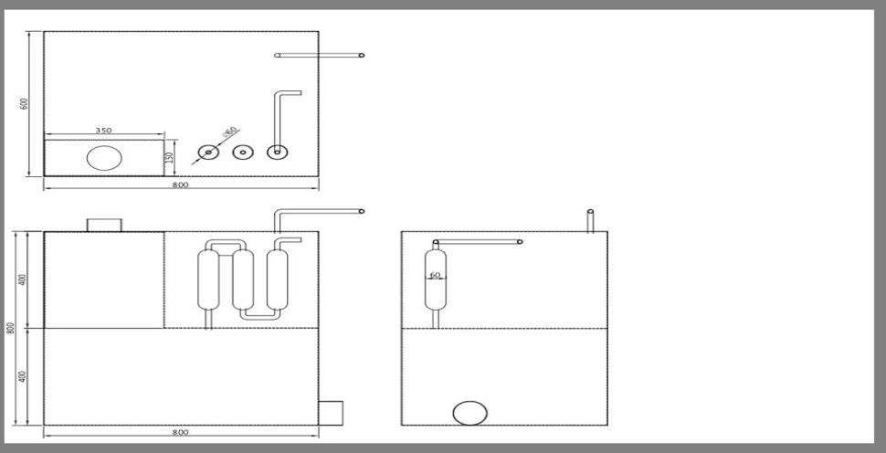

<div id="single-portfolio">
	<div id="portfolio-details" class="container">
		<a class="close-folio-item" href="#"><i class="fa fa-times"></i></a>
		
		<div class="row">
			<div class="col-sm-9">
				<div class="project-info">
					<h3>도면도 작성</h3>
					<p>이번 프로젝트를 진행하면서 주 목적으로 시행했던점은 현지생산을 원칙으로 진행했다. 규격화된 도면을 통해서 제3세계 어디에서나 사용될 수 있기를 기대한다.</p>
				</div>
            </div>
		</div>
	</div>
</div>